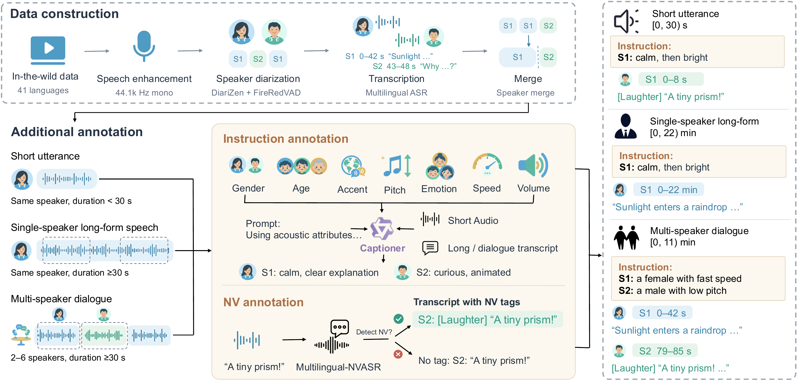

Under review at ICLR 2027
Continuo: A Large-Scale Dataset for Controllable Long-Form Speech Generation
Paper under double-blind review
Abstract
Generating minutes-long speech requires models to keep content, speaker identity, turn-taking, and expressive style consistent over time. Yet open training corpora cap examples at tens of seconds to a few minutes, and no open benchmark provides per-speaker reference audio for recordings longer than four minutes. We introduce Continuo, a 229K-hour multilingual dataset for controllable long-form speech generation. From in-the-wild recordings, Continuo constructs short utterances, single-speaker long-form speech, and multi-speaker dialogues from shared source recordings, preserving transcripts, speaker identities, pauses, and acoustic transitions across these three views. Examples longer than five minutes account for 50.0% of long-form and 66.8% of dialogue hours. To support expressive control, Continuo provides natural language style instructions for 4.77M examples and nonverbal-vocalization tags for 933K examples. We also introduce Continuo-testset, 23.3 hours of bilingual recordings of up to 30 minutes and four speakers, each speaker paired with reference audio. Trained on Continuo, our 0.6B-backbone non-autoregressive model achieves the lowest Chinese CER and English WER on TTSD-Eval (5.27%/9.93%) among compared systems, while its autoregressive counterpart matches Qwen3-TTS-12Hz-VD on InstructTTSEval (76.2/78.3 vs. 77.1/77.9). Together, these results establish Continuo as a comprehensive data foundation for long-form and expressively controllable speech generation.
Continuo Dataset
Continuo-Pipe turns in-the-wild recordings into three views that share the same source audio. Long-form views keep the continuous recording, including native pauses and transitions between speakers, instead of concatenating trimmed clips. Annotated subsets add natural-language style instructions and NV tags placed among the spoken words.

Continuo-testset. 118 human-verified Chinese and English recordings (23.3 h): 42 single-speaker long-form cases and 76 dialogues with 2–4 speakers, up to 30 min each. Every case provides a speaker-attributed script and reference audio for each speaker, and the whole script must be synthesized as a single recording.
Training Data Preview
Examples from each view of Continuo, drawn from the training set with test-set recordings excluded. Long-form and dialogue examples are continuous recordings that keep native pauses and turn-taking; dialogue transcripts are speaker-attributed.
Results
We train two models with a 0.6B backbone on Continuo: Continuo-AR (autoregressive with flow matching) and Continuo-NAR (masked generative). Both are competitive with much larger systems on long-form dialogue and learn instruction and NV control, which no open-source baseline supports for long-form speech.
Bold and underlining mark the best and second-best generated-speech scores per column. Parameter counts cover the sequence backbone only.
BibTeX
@inproceedings{continuo2027,
title = {Continuo: A Large-Scale Dataset for Controllable Long-Form Speech Generation},
author = {Anonymous},
booktitle = {Submitted to the International Conference on Learning Representations},
year = {2027}
}